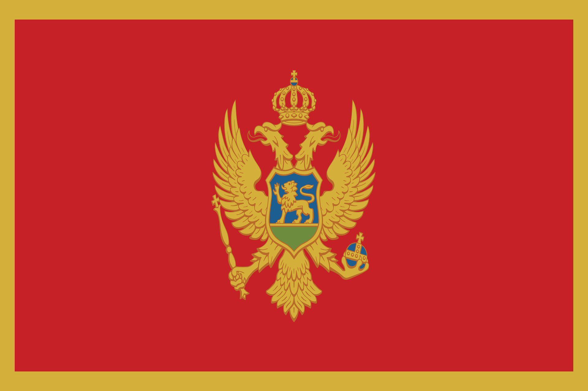

Montenegro – Land der schwarzen Berge
Montenegro liegt an der Adria in Südosteuropa.
Die Hauptstadt ist Podgorica.
Geografie und Klima
Gebirge und Küsten prägen das Land.
Das Klima ist mediterran und kontinental.
Geschichte und Kultur
Montenegro hat eine lange Geschichte als eigenständiges Land.
Sprache und Regionen
Die Amtssprache ist Montenegrinisch.
Wirtschaft und Tourismus
Tourismus wird immer wichtiger.
Fazit
Montenegro bietet Berge, Meer und Geschichte.